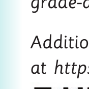

Introduction
The Learn English textbook has been written based on the 2023 Primary Education Syllabus, Standard I–II, issued by the Ministry of Education, Science and Technology. It is a revised edition of the Reading Standard Two Pupil’s Book, published in 2019, in accordance with the 2016 Basic Education Syllabus for Standard II, issued by the Ministry of Education, Science and Technology.
The book aims to enable the pupil to build listening or observing, speaking or signing and reading competencies by performing different learning activities focusing on the following areas: Using singular and plural forms of names of objects found in the environment; Expressing the days of the week and months of the year; Listening or observing and responding to simple sentences and stories; Engaging in simple conversations; Engaging in telling grade appropriate stories; Narrating simple events; Manipulating phonemes to form new words; Pronouncing words with long vowel sounds; Reading words with three sound consonant clusters; Identifying and reciting similar and different sounds in words; Reading simple words with familiar suffixes; Reading long words; Reading grade-appropriate stories with appropriate pronunciation, tone and speed; Reading grade-appropriate stories and observing basic punctuation marks, and Reading grade-appropriate texts for comprehension.
Additional learning resources are available in the TIE e-Library at https://ol.tie.go.tz or ol.tie.go.tz.

Tanzania Institute of Education